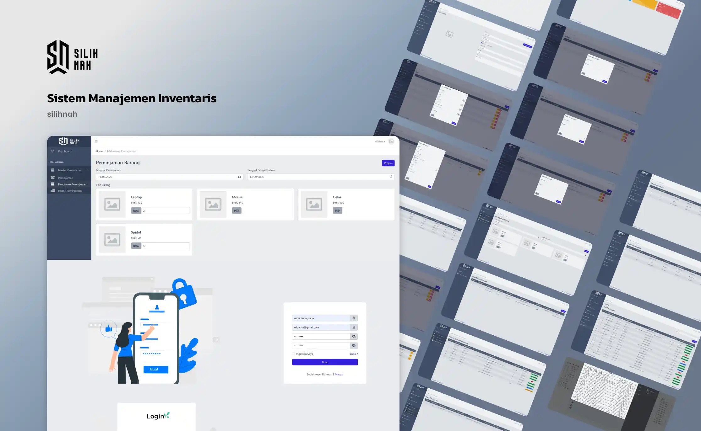

Kehilangan aset dan ketidakjelasan riwayat peminjaman barang merupakan celah kritis dalam manajemen inventaris institusi. Silihnah dirancang untuk mengautomasi pencatatan stok, melacak sirkulasi peminjaman, dan mengamankan data aset melalui satu dasbor terpusat yang presisi.

Pratinjau antarmuka Silihnah: Modul Autentikasi, Pemilihan Barang, dan Arsitektur Dasbor Manajerial.
Institusi seperti kampus, laboratorium, maupun gudang logistik sering kali mengandalkan buku catatan manual untuk mengelola sirkulasi barang inventaris. Metode ini tidak hanya memakan waktu (*time-consuming*), tetapi juga memicu masalah serius: hilangnya riwayat peminjam, ketidaksesuaian jumlah stok fisik dengan catatan, serta lambatnya proses audit aset.
Tanpa sistem pengawasan yang terpusat (*centralized tracking*), administrator kesulitan untuk melacak siapa yang meminjam barang bernilai tinggi (seperti laptop atau perangkat elektronik), kapan batas waktu pengembaliannya, dan memantau status kelayakan barang tersebut.
Silihnah dikembangkan sebagai aplikasi web *Inventory Management System* untuk mengeliminasi faktor kesalahan manusiawi (*human error*) dalam pengelolaan aset. Melalui Silihnah, proses pendataan barang (stok masuk), pembuatan formulir peminjaman (keluar), hingga konfirmasi pengembalian diintegrasikan ke dalam satu alur komputasi.
Aplikasi manajerial membutuhkan antarmuka yang mampu menyajikan data padat tanpa membebani kognisi pengguna (*cognitive overload*).
Struktur Dasbor (Dashboard Layout): Saya menggunakan pendekatan tata letak kolom ganda (bilah navigasi di sisi kiri dan area konten di sisi kanan). Susunan ini memudahkan administrator
berpindah antar modul—seperti "Master Peminjaman", "Persetujuan", dan "Pengembalian"—secara efisien.
Modul Peminjaman Visual: Berbeda dengan aplikasi inventaris klasik yang hanya menampilkan tabel teks, Silihnah menyajikan barang pinjaman (seperti Laptop, *Mouse*, Spidol) dalam bentuk *Card
UI* yang memuat informasi stok ketersediaan secara langsung (*real-time*), lengkap dengan form penentuan "Tanggal Peminjaman" dan "Tanggal Pengembalian".
Skema Autentikasi: Halaman *Login* didesain menggunakan ilustrasi keamanan vektor untuk membangun impresi sistem yang solid. Ruang input dirancang lebar dengan fokus (*focus state*) yang
kontras untuk mempercepat proses masuk pengguna.
Silihnah beroperasi mengandalkan logika kondisional (CRUD) yang ketat pada sisi *back-end*. Infrastruktur basis data (*database*) relasional dirancang untuk menautkan tabel Pengguna, tabel Barang, dan tabel Transaksi Peminjaman.
Sistem mengunci (*lock*) ketersediaan stok secara komputasional ketika sebuah barang sedang berstatus "Dipinjam", dan secara otomatis mengembalikan jumlah stok ke dalam sistem pangkalan data ketika administrator memverifikasi status "Dikembalikan". Implementasi sistem hak akses (*Role-based Access Control*) juga diterapkan untuk membedakan otoritas antara akun peminjam (mahasiswa/staf) dan akun administrator gudang.
Mencegah manipulasi data stok dan hilangnya riwayat peminjaman.
Mempercepat proses pelaporan inventaris akhir bulan melalui dasbor.
Perhitungan keluar-masuk barang yang dikalkulasi secara komputasi.
Kesimpulannya, pengembangan Silihnah menegaskan bahwa kompleksitas sirkulasi barang dapat disederhanakan melalui perancangan antarmuka yang bersih (*clean UI*) dan skema basis data yang terstruktur. Aplikasi ini mentransformasi prosedur manual menjadi alur kerja digital yang transparan dan dapat diandalkan oleh institusi.